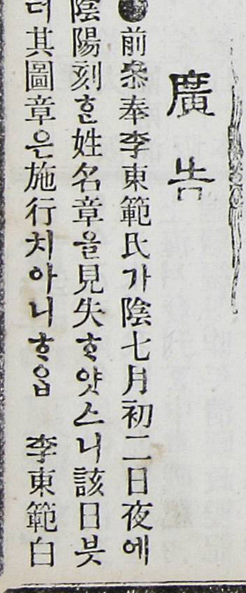

석암 이동범 — ‘이 진사’의 생애
함평 이동범가, 128년의 인연 | 제5편
지난 네 편에서는 백범 김구 선생과 저희 집안의 인연을 시간 순서대로 따라가 보았습니다. 1898년의 보름, 1946년의 재회와 「光明」 휘호, 그리고 지금도 남아 있는 종가와 이재혁 가옥까지입니다. 이번 편부터는 그 이야기 속 사람들을 한 분씩 소개하려 합니다. 첫 번째는 『백범일지』의 ‘이 진사’, 저희 고조부 석암 이동범 선생입니다.
1. 3대의 첫 자리
석암 이동범(石庵 李東範, 1869~1940) 선생은 저희 집안 3대 할아버지 가운데 첫 자리에 계신 분입니다. 호는 석암(石庵), 자는 경연(敬然)으로 전합니다. 아들 이재승, 손자 이상래로 이어지는 종가의 계보가 이분에게서 시작됩니다. 그동안은 김구 선생의 일화 속 ‘이 진사’로만 불렸지만, 이번에는 한 사람의 생애로 따라가 보려 합니다.
2. 1898년의 주인
김구 선생이 함평의 ‘이 진사’ 댁을 찾은 1898년, 이동범 선생은 서른 살 무렵이었습니다. 집안을 이끌던 젊은 주인이었던 셈입니다. 『백범일지』는 이 집에서 글을 배우던 어린 형제로 이재혁·이재승의 이름을 적고 있습니다. 당시 장남 이재승은 만 여덟 살, 차남 이재혁은 만 다섯 살 무렵이었습니다. 하룻밤 손님을 보름 동안 머물게 한 환대는 2편에서 소개했습니다. 그때 어린아이였던 두 형제가 반세기 뒤 서울로 김구 선생을 찾아뵌 이야기는 3편에 있습니다.
3. 잃어버린 도장
지금까지 찾은 신문 기록 가운데 고조부의 이름이 가장 먼저 등장하는 곳은 뜻밖에도 광고란입니다. 김구 선생이 다녀간 이듬해인 1899년 8월 23일, 『황성신문』 3면 아래쪽에 짧은 광고 하나가 실렸습니다.
내용은 이렇습니다. 전 참봉 이동범이 음력 7월 2일 밤에 음양각으로 새긴 이름 도장을 잃어버렸으니, 그날부터 그 도장은 쓰지 않는다는 것입니다. 끝에는 ‘李東範 白’, 이동범이 알린다는 서명까지 또박또박 붙어 있습니다.

127년 전 고조부가 도장을 잃어버리고 신문에 광고까지 내셨다는 사실에 한참 웃었습니다. 물건을 잘 흘리고 다니는 저로서는 괜히 반가운 대목입니다. 덤벙대는 것도 집안 내력인가 싶어서요.
웃고 넘기기에는 아까운 정보도 들어 있습니다. 1899년에 이미 ‘전 참봉(前參奉)’으로 불렸다는 점입니다. 2003년 이재혁 가옥 조사보고서는 참봉 이력을 1902년으로 적고 있지만, 이 광고는 참봉 벼슬이 그보다 앞섰음을 보여 줍니다.
4. 벼슬길과 귀향
1917년 7월 8일 『매일신보』의 인물 기사는 선생의 관력을 이렇게 전합니다. 조경묘(肇慶廟) 참봉으로 처음 벼슬길에 올랐고, 광무 6년(1902) 정3품 통정대부에 올라 중추원 의관을 거쳐 전북 만경군수가 되었다는 것입니다.
대한제국 『관보』에도 이 시기의 기록이 남아 있습니다. 1903년 8월 만경군수에서 물러나 곧바로 황해도 은율군수에 임명되었고, 이듬해 7월 『관보』에는 이미 ‘은율 전 군수’로 나옵니다. 1편에 적은 ‘관직에서 물러난 뒤’가 바로 이 무렵입니다.

기사는 선생이 부모를 모시기 위해 벼슬을 내려놓고 고향 함평으로 돌아왔다고 적습니다. 당시 마흔아홉이던 선생을 공익심과 자선심이 두터운 인물로 소개하고, 일흔의 어머니를 지극히 모시는 효행을 집안의 가장 큰 특징으로 꼽습니다.
5. 고향에서의 일
고향으로 돌아온 뒤의 모습은 후대 기록과 집안 전승에 남아 있습니다. 2003년 조사보고서는 선생이 함평공원 안의 세심정(洗心亭)을 짓는 데 앞장섰고, 3천 석의 부호로 알려졌다고 적고 있습니다.
같은 보고서에는 집안의 정자 육모정 이야기도 나옵니다. 선친 이계송이 1880년대 초에 지은 육모정이 새로 나는 도로에 편입될 처지가 되자, 선생은 1924년 정자를 정리하고 연못의 돌을 옮겨 새로 연정(蓮亭)을 지었다고 합니다. 육모정이 사라지면서, 김구 선생이 머물던 시절의 공간은 1920년대에 한 번 크게 바뀌었습니다. 이 변화는 4편에서 살펴본 두 가옥의 관계를 이해하는 데에도 중요한 단서입니다.

6. 남은 질문들
석암 이동범 선생은 1940년에 세상을 떠나셨습니다. 김구 선생이 옛 은인의 집을 다시 찾으려 했던 1946년에는 이미 계시지 않았고, 그래서 두 아들이 대신 김구 선생을 찾아뵙게 됩니다. 정리하면서 앞으로 확인할 질문도 분명해졌습니다. 1917년 기사의 세부 판독, 만경군수 시절 『관보』 기록의 내용, 세심정 건립에 관한 기록, 그리고 ‘진사’라는 호칭의 근거입니다.
기록으로 확인되는 것과 집안에 전해 오는 것을 나누어 적는 일이, 고조부의 생애를 가장 정직하게 남기는 방법이라고 생각합니다.
다음 편에서는 종가를 이어받은 장남 이재승 할아버지를 소개하겠습니다.
백범김구기념관 공식 인터뷰
지난 글
- 제1편: ‘이 진사’는 누구였나 — 백범 김구와 함평 이동범가
- 제2편: 보름을 머문 이유 — 1898년, 함평의 은신
- 제3편: 1946년 재회와 光明 — 김구가 다시 찾은 인연
- 제4편: 종가와 이재혁 가옥 — 두 집에 남은 128년
주요 참고자료
[1] 『황성신문』, 1899년 8월 23일, 3면 광고(이동범 성명장 분실).
[2] 『매일신보』, 1917년 7월 8일, 「全南名士 李東範氏」 인물 기사.
[3] 『관보』 제2598호(1903. 8. 22), 만경군수 면직·은율군수 임명 / 『관보』 제2885호(1904. 7. 22).
[4] 김구, 『백범일지』, 1898년 함평 체류 관련 기록(127쪽).
[5] 박강철·김지민·천득염·김희태, 「함평 이재혁 가옥 조사보고서」, 『지방문화재 지정조사 보고서(3)』(전라남도 문화재위원회 심의자료), 2003. 12. 23.
[6] 『함평이씨대동보』.
이 글은 문헌에서 직접 확인되는 사실과 후대 기록, 가족 전승을 구분해 작성했습니다. 1899년 광고와 1917년 기사의 내용은 필자의 판독을 바탕으로 했으며, 추가 사료에 따라 보완할 예정입니다.